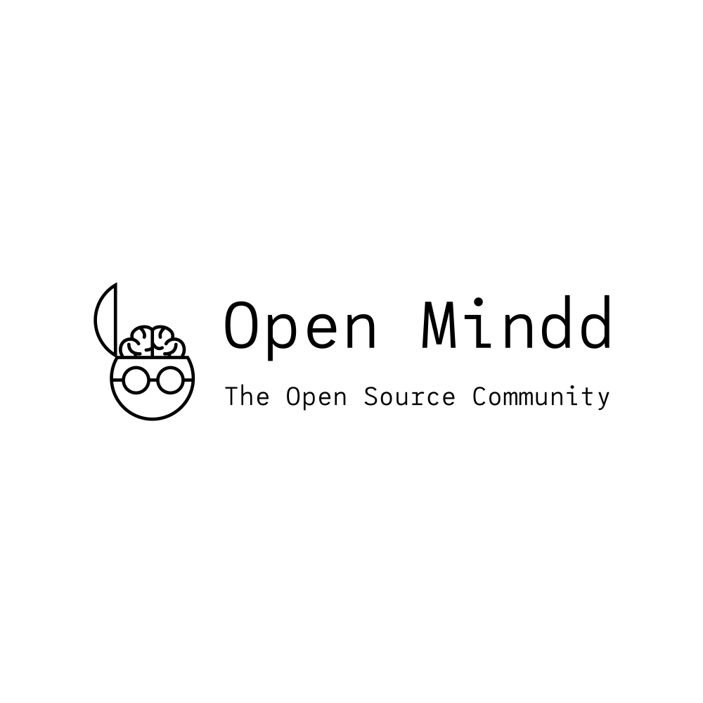

---
# front matter tells Jekyll to process Liquid
title: Home
---

<div styles="background-color:black; text-align:center">
  
  <h1>
    Welcome to OSC | Open Mindd ❤️ OPEN SOURCE |Open Mindd ❤️ all kind of open
    source projects technical or non-technical.
  </h1>
  <iframe
    src="https://discordapp.com/widget?id=708017538969108490&theme=light"
    width="1200"
    height="500"
    allowtransparency="true"
    frameborder="0"
    text-align="center"
  ></iframe>

  <h1>Join the server and get started</h1>
</div>
